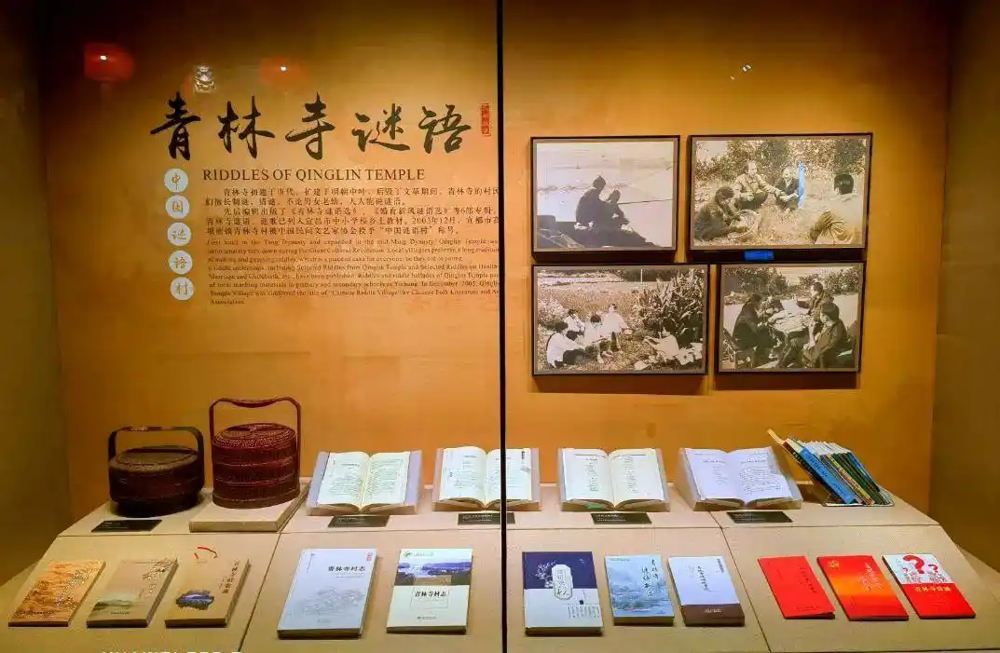
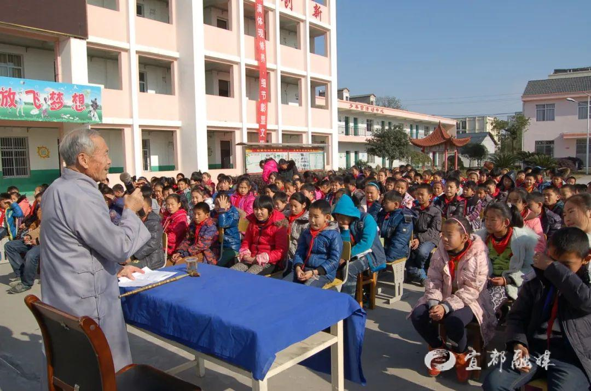
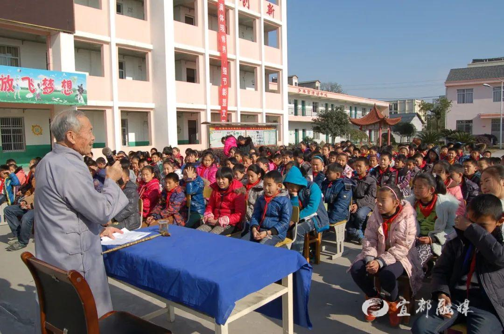
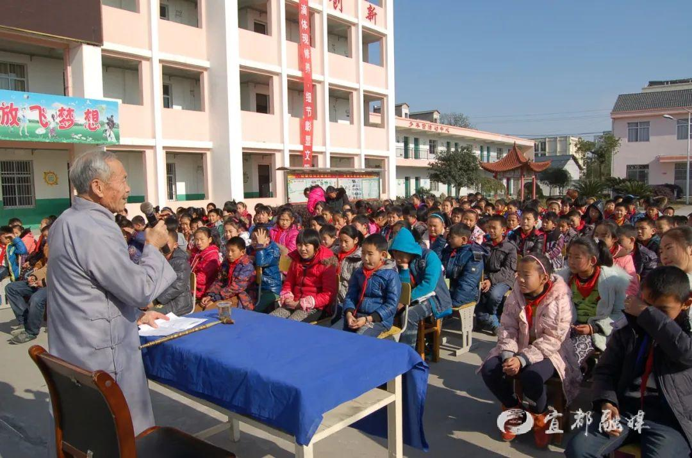

活动起源
青林谜语文化节源于明清时期的"二月二龙抬头"民间谜会，已有400余年历史。最初是当地文人雅士在青林寺举办的谜语会友活动，后逐渐发展成为民间盛事。2010年，经文化部门批准，正式定名为"青林谜语文化节"，成为国家级非物质文化遗产展示平台。
"青林谜语文化节不仅是传统文化的展示窗口，更是连接古今、沟通中外的文化桥梁。每年吸引数万谜语爱好者前来参与，已成为中国谜语界的年度盛事。"
活动亮点
1. 传统谜语擂台赛
来自全国各地的谜语高手同台竞技，分为成人组和青少年组。比赛内容包括即兴创作、谜面解读、谜底竞猜等环节，展现中华谜语的博大精深。
2. 非遗展示区
集中展示与谜语相关的非物质文化遗产，包括谜语剪纸、谜语书法、谜语民歌等传统艺术形式，让游客全方位了解谜语文化。
3. 沉浸式谜语体验
利用现代科技手段，打造AR谜语寻宝、全息谜语剧场等互动项目，让传统文化焕发新活力。
活动剪影


 


参与方式
2024年青林谜语文化节将于3月11日-13日举行，现已开放报名通道：
- 参赛报名：通过官网或微信公众号提交报名表
- 观众预约：免费参观，建议提前预约以避免人流高峰
- 住宿推荐：周边特色民宿提供文化节专属优惠